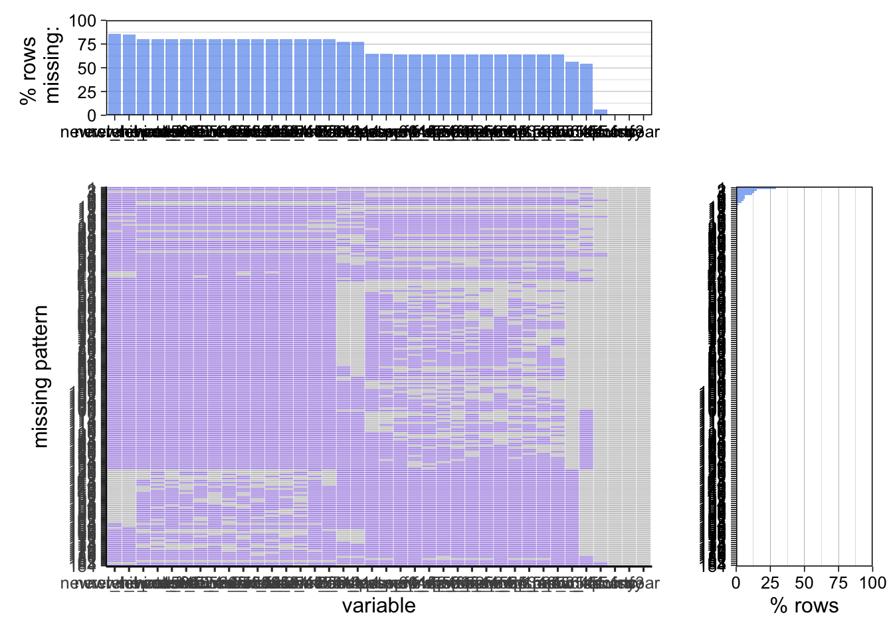

Chapter 3 Data
3.1 Sources
3.1.1 Tuberculosis(TB) notification and outcome dataset
- The source of the dataset is the global tuberculosis report published by World Health Organization(WHO). The dataset provided by countries to WHO and estimates of TB burden generated by WHO for the Global Tuberculosis Report.[Global Tuberculosis Report] (https://www.who.int/teams/global-tuberculosis-programme/data)
- The column explanation(dictionary) is also contained in the link above. The data dictionary file will cover variable names with corresponding definitions. For the categorical variables, the dictionary will also provide the encoding method and meaning of the code.
- Countries provide the data to WHO and we are not sure how exactly those countries collected the data. We conjecture that the data are collected from every hospital by national public health agencies like the Centers for Disease Control and Prevention in the United States. Because the dataset contains the TB data from 1980 to 2021, the collection method may also vary.
- The TB dataset is in CSV(comma-separated value). We can apply read.csv() in R to import the CSV file to the R data frame.
- The TB dataset contains the annual data for the period of 41 years, so we assume that the frequency of updates is once per year. The TB dataset is composed of 198 features of TB data from 217 countries from 1980 to 2021, although there are huge amounts of missing data which will be handled in future analysis.
- The TB dataset contains 595 variables including the budget, community engagement, contacts preventive treatment, estimates, outcomes, etc.
- There are lots of missing data, dealing with missing value is impoertant in this dataset.
- According to the topics we are interested in, we cannot analyze all variables. There are several potentially related features can be drawn from the dataset.
- c_newinc (Total of new and relapse cases and cases with unknown previous TB treatment history)
- age_group (in years)
- e_inc_tbhiv_num (Estimated incidence of TB cases who are HIV-Positive)
- Etc.
3.1.2 Vaccination dataset
- The source is from the United Nations International Children’s Emergency Fund(UNICEF) which is an agency of the United Nations responsible for providing humanitarian and developmental aid to children worldwide. The UNICEF data will cover the situation of children and women worldwide. [Immunization Data] (https://data.unicef.org/resources/dataset/immunization/)
- According to the UNICEF data and analytics introduction, UNICEF’s Data Team is responsible for the collection, validation, analysis, use, and communication of the most statistically sound. The team upholds the quality, integrity, and organization of these data. [UNICEF Data] (https://data.unicef.org/about-us/)
- The collected data is in Microsoft Excel Spreadsheet format(.xlsx). The data set is updated annually for 168 countries worldwide from 1980 - 2021.
- Same as the CSV file, the .xlsx file can be imported to R and converted to the data frame by the readxl package.
- The structure of the dataset is clear; the spreadsheet covers the BCG vaccination rate for 168 countries in the world in past 41 years. The dataset is not perfect, there exists some missing data for some countries in the period of time. It may cause some problems for our future analysis.
- The number of countries recorded in the spreadsheet from UNICEF is less than the number of countries covered in the WHO dataset. Therefore, during the analysis of the TB and BCG vaccines, some countries will be ignored.
3.1.3 Population dataset
- The source is from the World Bank(WB) which is an international financial institution that provides loans and grants to the government of low- and middle income countries for the purpose of pursing capital projects. Population Data
- The data set is covered all 266 countries in the world and the year covered is from 1980 to 2021.
- The variables are mostly discrete expect for some categorical variables indicate each country.
3.1.4 Number of new HIV infections
- The source is from Institute for Health Metrics and Evaluation, Global Burden of Disease(2019). HIV Infection Data
- The data set collects data from WHO member countries and time span for the data set is 1990-2019.
- There are 266 countries in total, and the variables we focused on are all discrete integer.
3.2 Cleaning / Transformation
3.2.2 TB Notification and Outcome Dataset
3.2.2.1 Import Data and Select Target Columns
tb <- read.csv("Datasets/raw/TB_notifications_2022-10-28.csv")
tb_cleaning <- select(tb, country, iso3, year, new_sp, new_labconf, c_newinc, newrel_hivtest, newrel_hivpos, hivtest, hivtest_pos, new_sp_m014, new_sp_m1524, new_sp_m2534, new_sp_m3544, new_sp_m4554, new_sp_m5564, new_sp_m65, newrel_m014, newrel_m1524, newrel_m2534, newrel_m3544, newrel_m4554, newrel_m5564, newrel_m65, new_sp_f014, new_sp_f1524, new_sp_f2534, new_sp_f3544, new_sp_f4554, new_sp_f5564, new_sp_f65, newrel_f014, newrel_f1524, newrel_f2534, newrel_f3544, newrel_f4554, newrel_f5564, newrel_f65)3.2.2.2 Merge Data for Same Age Group
tb_cleaning_1 <- tb_cleaning
tb_cleaning_1$new_sp_m014 <- ifelse(tb_cleaning$year <= 2012, tb_cleaning$new_sp_m014, tb_cleaning$newrel_m014)
tb_cleaning_1$new_sp_m1524 <- ifelse(tb_cleaning$year <= 2012, tb_cleaning$new_sp_m1524, tb_cleaning$newrel_m1524)
tb_cleaning_1$new_sp_m2534 <- ifelse(tb_cleaning$year <= 2012, tb_cleaning$new_sp_m2534, tb_cleaning$newrel_m2534)
tb_cleaning_1$new_sp_m3544 <- ifelse(tb_cleaning$year <= 2012, tb_cleaning$new_sp_m3544, tb_cleaning$newrel_m3544)
tb_cleaning_1$new_sp_m4554 <- ifelse(tb_cleaning$year <= 2012, tb_cleaning$new_sp_m4554, tb_cleaning$newrel_m4554)
tb_cleaning_1$new_sp_m5564 <- ifelse(tb_cleaning$year <= 2012, tb_cleaning$new_sp_m5564, tb_cleaning$newrel_m5564)
tb_cleaning_1$new_sp_m65 <- ifelse(tb_cleaning$year <= 2012, tb_cleaning$new_sp_m65, tb_cleaning$newrel_m65)
tb_cleaning_1$new_sp_f014 <- ifelse(tb_cleaning$year <= 2012, tb_cleaning$new_sp_f014, tb_cleaning$newrel_f014)
tb_cleaning_1$new_sp_f1524 <- ifelse(tb_cleaning$year <= 2012, tb_cleaning$new_sp_f1524, tb_cleaning$newrel_f1524)
tb_cleaning_1$new_sp_f2534 <- ifelse(tb_cleaning$year <= 2012, tb_cleaning$new_sp_f2534, tb_cleaning$newrel_m2534)
tb_cleaning_1$new_sp_f3544 <- ifelse(tb_cleaning$year <= 2012, tb_cleaning$new_sp_f3544, tb_cleaning$newrel_m3544)
tb_cleaning_1$new_sp_f4554 <- ifelse(tb_cleaning$year <= 2012, tb_cleaning$new_sp_f4554, tb_cleaning$newrel_f4554)
tb_cleaning_1$new_sp_f5564 <- ifelse(tb_cleaning$year <= 2012, tb_cleaning$new_sp_f5564, tb_cleaning$newrel_f5564)
tb_cleaning_1$new_sp_f65 <- ifelse(tb_cleaning$year <= 2012, tb_cleaning$new_sp_f65, tb_cleaning$newrel_f65)
tb_cleaning_1$hivtest <- ifelse(tb_cleaning$year <= 2014, tb_cleaning$hivtest, tb_cleaning$newrel_hivtest)
tb_cleaning_1$hivtest_pos <- ifelse(tb_cleaning$year <= 2014, tb_cleaning$hivtest_pos, tb_cleaning$newrel_hivpos)3.2.2.3 Remove Missing Values
tb_cleaning_2 <- select(tb_cleaning_1, country, iso3, year, new_sp, new_labconf, c_newinc, hivtest, hivtest_pos, new_sp_m014, new_sp_m1524, new_sp_m2534, new_sp_m3544, new_sp_m4554, new_sp_m5564, new_sp_m65, new_sp_f014, new_sp_f1524, new_sp_f2534, new_sp_f3544, new_sp_f4554, new_sp_f5564, new_sp_f65)
tb_cleaning_3 <- subset(tb_cleaning_2, is.na(c_newinc) == FALSE)
head(tb_cleaning_3)## country iso3 year new_sp new_labconf c_newinc hivtest hivtest_pos new_sp_m014 new_sp_m1524 new_sp_m2534 new_sp_m3544 new_sp_m4554 new_sp_m5564 new_sp_m65
## 1 Afghanistan AFG 1980 NA NA 71685 NA NA NA NA NA NA NA NA NA
## 2 Afghanistan AFG 1981 NA NA 71554 NA NA NA NA NA NA NA NA NA
## 3 Afghanistan AFG 1982 NA NA 41752 NA NA NA NA NA NA NA NA NA
## 4 Afghanistan AFG 1983 NA NA 52502 NA NA NA NA NA NA NA NA NA
## 5 Afghanistan AFG 1984 NA NA 18784 NA NA NA NA NA NA NA NA NA
## 6 Afghanistan AFG 1985 NA NA 10742 NA NA NA NA NA NA NA NA NA
## new_sp_f014 new_sp_f1524 new_sp_f2534 new_sp_f3544 new_sp_f4554 new_sp_f5564 new_sp_f65
## 1 NA NA NA NA NA NA NA
## 2 NA NA NA NA NA NA NA
## 3 NA NA NA NA NA NA NA
## 4 NA NA NA NA NA NA NA
## 5 NA NA NA NA NA NA NA
## 6 NA NA NA NA NA NA NA3.2.3 Vaccination Dataset
3.2.3.1 Import Data
vaccine <- read_excel(path = "../vaccine.xlsx")
vaccine_cleaned <- (vaccine %>% select(0:34))
vaccine_cleaned <- subset(vaccine_temp, select = -c(unicef_region,vaccine))
summary(vaccine_cleaned)## # A tibble: 6 × 32
## iso3 country `2021` `2020` `2019` `2018` `2017` `2016` `2015` `2014` `2013` `2012` `2011` `2010` `2009` `2008` `2007` `2006` `2005` `2004` `2003` `2002` `2001`
## <chr> <chr> <dbl> <dbl> <dbl> <dbl> <dbl> <dbl> <dbl> <dbl> <dbl> <dbl> <dbl> <dbl> <dbl> <dbl> <dbl> <dbl> <dbl> <dbl> <dbl> <dbl> <dbl>
## 1 AFG Afghan… 84 87 86 89 84 78 76 74 72 78 71 68 64 66 60 60 57 51 44 46 43
## 2 ALB Albania 99 98 99 99 99 99 99 99 99 96 97 99 97 99 98 97 98 97 95 94 93
## 3 DZA Algeria 99 99 99 99 99 99 99 99 99 99 99 99 99 99 99 99 98 98 98 98 97
## 4 AGO Angola 56 58 69 72 69 40 64 72 71 73 74 79 70 73 75 54 51 63 54 76 70
## 5 ARG Argent… 81 75 85 93 95 92 96 99 99 99 99 99 99 99 99 99 99 99 99 95 92
## 6 ARM Armenia 98 99 99 99 99 99 99 99 99 96 96 95 99 98 94 91 94 96 92 97 96
## # … with 9 more variables: `2000` <dbl>, `1999` <dbl>, `1998` <dbl>, `1997` <dbl>, `1996` <dbl>, `1995` <dbl>, `1994` <dbl>, `1993` <dbl>, `1992` <dbl>3.2.3.2 Transform to Clean Data
vaccine_pivoted <- vaccine_cleaned %>%
pivot_longer(cols = -c('iso3','country'),
names_to = 'year',
values_to = 'vaccination_rate') %>%
mutate(year = substr(year, 1, 5))
head(vaccine_pivoted)## # A tibble: 6 × 4
## iso3 country year vaccination_rate
## <chr> <chr> <chr> <dbl>
## 1 AFG Afghanistan 2021 84
## 2 AFG Afghanistan 2020 87
## 3 AFG Afghanistan 2019 86
## 4 AFG Afghanistan 2018 89
## 5 AFG Afghanistan 2017 84
## 6 AFG Afghanistan 2016 783.2.4 Population
3.2.4.1 Import and Trandorm to Clean Data
df_population <- read.csv("../Datasets/population.csv")
df_population_1 <- df_population %>%
select(1:2, 25:66) %>%
pivot_longer(cols = -c('Country.Name', 'Country.Code'),
names_to = 'year',
values_to = 'population') %>%
mutate(year = substr(year, 2, 5)) %>%
rename(country = Country.Name,
iso3 = Country.Code)
head(df_population_1)## # A tibble: 6 × 3
## iso3 year population
## <chr> <chr> <dbl>
## 1 ABW 1980 60097
## 2 ABW 1981 60561
## 3 ABW 1982 61341
## 4 ABW 1983 62213
## 5 ABW 1984 62826
## 6 ABW 1985 630243.2.4.2 Merged with TB Dataset
df_tb_cleaning <- merge(df_population_1, tb_cleaning_3, by = c('iso3', 'year'))
df_continent <- read.csv("Datasets/raw/continents2.csv")
df_continent_1 <- df_continent %>%
select(alpha.3, region) %>%
rename(iso3 = alpha.3, continent = region)
df_tb_cleaning_1 <- merge(df_continent_1, df_tb_cleaning, by = 'iso3')
head(df_tb_cleaning_1)## iso3 continent year population country new_sp new_labconf c_newinc hivtest hivtest_pos new_sp_m014 new_sp_m1524 new_sp_m2534 new_sp_m3544 new_sp_m4554
## 1 ABW Americas 2012 102565 Aruba 6 6 28 1 1 NA NA NA 2 3
## 2 ABW Americas 2013 103165 Aruba NA 2 11 NA NA NA NA NA 2 1
## 3 ABW Americas 2010 101665 Aruba 4 6 6 NA NA NA NA NA NA NA
## 4 ABW Americas 2011 102050 Aruba 7 7 8 NA NA NA NA NA NA 4
## 5 ABW Americas 2017 105361 Aruba NA 2 8 NA 0 0 0 0 1 1
## 6 ABW Americas 2018 105846 Aruba NA 5 5 NA NA 0 0 0 0 2
## new_sp_m5564 new_sp_m65 new_sp_f014 new_sp_f1524 new_sp_f2534 new_sp_f3544 new_sp_f4554 new_sp_f5564 new_sp_f65
## 1 NA NA 1 4 NA 2 1 NA 1
## 2 2 NA NA 1 NA 2 1 2 2
## 3 NA NA NA NA NA NA NA NA NA
## 4 NA 1 NA NA 1 NA NA NA 1
## 5 0 1 0 1 0 1 2 0 1
## 6 2 0 0 0 0 0 0 1 03.2.4.3 Merged with Vaccine Dataset
vaccine_population <- merge(vaccine_pivoted, df_population_1, by=c('iso3','year','country'))
vaccine_population_geo <- merge(df_continent_1, vaccine_population, by='iso3')
write.csv(vaccine_population_geo, "Datasets/cleaned/vaccine_population_geo.csv")
head(vaccine_population_geo)## iso3 continent year country vaccination_rate population
## 1 AFG Asia 1992 Afghanistan 19 14485543
## 2 AFG Asia 1993 Afghanistan 17 15816601
## 3 AFG Asia 1994 Afghanistan 15 17075728
## 4 AFG Asia 1995 Afghanistan 31 18110662
## 5 AFG Asia 1996 Afghanistan 47 18853444
## 6 AFG Asia 1997 Afghanistan 43 193571263.2.5 HIV Infections
3.2.5.1 Read Dataset and mMrge with TB Dataset
df_hiv <- read.csv("../Datasets/number-of-people-living-with-hiv.csv")
df_hiv_1 <- df_hiv %>%
select(2:4) %>%
rename(iso3 = Code,
year = Year,
hiv_num = Prevalence...HIV.AIDS...Sex..Both...Age..All.Ages..Number.)
df_tb_cleaning_2 <- merge(df_tb_cleaning_1, df_hiv_1, by = c('iso3', 'year')) %>%
mutate(tb_infection_rate = c_newinc/population,
hiv_tb_infection_rate = hivtest_pos/hiv_num)## iso3 year continent population country new_sp new_labconf c_newinc hivtest hivtest_pos new_sp_m014 new_sp_m1524 new_sp_m2534 new_sp_m3544 new_sp_m4554
## 1 AFG 1990 Asia 12412311 Afghanistan NA NA 4332 NA NA NA NA NA NA NA
## 2 AFG 1991 Asia 13299016 Afghanistan NA NA 23067 NA NA NA NA NA NA NA
## 3 AFG 1997 Asia 19357126 Afghanistan 618 NA 1290 NA NA 0 10 6 3 5
## 4 AFG 1998 Asia 19737770 Afghanistan 1833 NA 3084 NA NA 30 129 128 90 89
## 5 AFG 1999 Asia 20170847 Afghanistan 1669 NA 3314 NA NA 8 55 55 47 34
## 6 AFG 2000 Asia 20779957 Afghanistan 2892 NA 7107 NA NA 52 228 183 149 129
## new_sp_m5564 new_sp_m65 new_sp_f014 new_sp_f1524 new_sp_f2534 new_sp_f3544 new_sp_f4554 new_sp_f5564 new_sp_f65 hiv_num tb_infection_rate hiv_tb_infection_rate
## 1 NA NA NA NA NA NA NA NA NA 418 3.490083e-04 NA
## 2 NA NA NA NA NA NA NA NA NA 495 1.734489e-03 NA
## 3 2 0 5 38 36 14 8 0 1 959 6.664212e-05 NA
## 4 64 41 45 350 419 194 118 61 20 998 1.562487e-04 NA
## 5 21 8 25 139 160 110 50 25 8 1024 1.642965e-04 NA
## 6 94 80 93 414 565 339 205 99 36 1062 3.420123e-04 NA3.3 Missing Patttern
3.3.1 TB Notification and Outcome Dataset
3.3.1.1 Before Cleaning
colSums(is.na(tb_cleaning))## country iso3 year new_sp new_labconf c_newinc newrel_hivtest newrel_hivpos hivtest hivtest_pos
## 0 0 0 5020 4843 542 7615 7619 6876 6905
## new_sp_m014 new_sp_m1524 new_sp_m2534 new_sp_m3544 new_sp_m4554 new_sp_m5564 new_sp_m65 newrel_m014 newrel_m1524 newrel_m2534
## 5754 5718 5721 5708 5704 5709 5718 7143 7179 7175
## newrel_m3544 newrel_m4554 newrel_m5564 newrel_m65 new_sp_f014 new_sp_f1524 new_sp_f2534 new_sp_f3544 new_sp_f4554 new_sp_f5564
## 7174 7173 7173 7176 5752 5732 5726 5727 5722 5731
## new_sp_f65 newrel_f014 newrel_f1524 newrel_f2534 newrel_f3544 newrel_f4554 newrel_f5564 newrel_f65
## 5729 7147 7178 7174 7174 7175 7177 7179plot_missing(tb_cleaning) >> There are missing value for almost all variables except new incidence number. For some columns, such as ‘new_sp_m014’ and ‘newrel_m014’, the first one is record the number until 2012, and latter one record number after 2012. So we can combine these two and reduce missing values.
3.3.1.2 After Cleaning
colSums(is.na(tb_cleaning_3))## country iso3 year new_sp new_labconf c_newinc hivtest hivtest_pos new_sp_m014 new_sp_m1524 new_sp_m2534 new_sp_m3544
## 0 0 0 4478 4301 0 5068 5101 3433 3433 3432 3418
## new_sp_m4554 new_sp_m5564 new_sp_m65 new_sp_f014 new_sp_f1524 new_sp_f2534 new_sp_f3544 new_sp_f4554 new_sp_f5564 new_sp_f65
## 3413 3419 3430 3435 3446 3437 3437 3433 3444 3444plot_missing(tb_cleaning_3)After data cleaning and combining associated columns, the row missing reduced about 25%.
3.3.2 Vaccination Dataset
3.3.2.1 Missing Pattern Before Cleaning
colSums(is.na(vaccine))## unicef_region iso3 country vaccine 2021 2020 2019 2018 2017 2016 2015
## 0 0 0 0 11 11 11 11 11 11 10
## 2014 2013 2012 2011 2010 2009 2008 2007 2006 2005 2004
## 10 10 8 8 9 8 8 7 7 9 8
## 2003 2002 2001 2000 1999 1998 1997 1996 1995 1994 1993
## 8 8 10 10 10 12 12 11 11 10 11
## 1992 1991 1990 1989 1988 1987 1986 1985 1984 1983 1982
## 15 33 34 34 35 37 37 39 44 52 58
## 1981 1980
## 64 90plot_missing(vaccine)From the plot, the most missing values occurs before 1992.
3.3.2.2 Missing Pattern After Cleaning
colSums(is.na(vaccine_cleaned))## iso3 country 2021 2020 2019 2018 2017 2016 2015 2014 2013 2012 2011 2010 2009 2008 2007 2006 2005 2004
## 0 0 11 11 11 11 11 11 10 10 10 8 8 9 8 8 7 7 9 8
## 2003 2002 2001 2000 1999 1998 1997 1996 1995 1994 1993 1992
## 8 8 10 10 10 12 12 11 11 10 11 15plot_missing(vaccine)>> After dropping years before 1992, the complete cases increased more than 25%.
3.4 Missing Value Analysis
- There are 4 data sets total - the TB data set, Vaccine data set, Population data set, and HIV data set. The Population and HIV data set almost have no missing value. However, the TB data set and Vaccine have plenty missing value and data set layout is messy which need to drop columns and pivot the table of the data sets.
- For TB data set, there are lots of country didn’t report the TB cases for different age group, it is possible because some country may not have the ability to count cases in the early years. For some country, they adapted new detection technology after 2012; therefore, we havet to combine the columns to get the overall cases statistics for all age group.
- For Vaccine data set, some countries not require the public take TB vaccine like U.S. and Canada, and some countries requires public take TB vaccine for infant. Hence, it is reasonable that there will have some missing value for some country. Some country start to mass inoculations since 1992, we can focus on the years between 1992 to 2021.